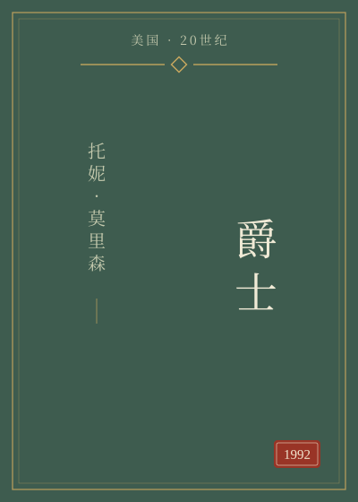
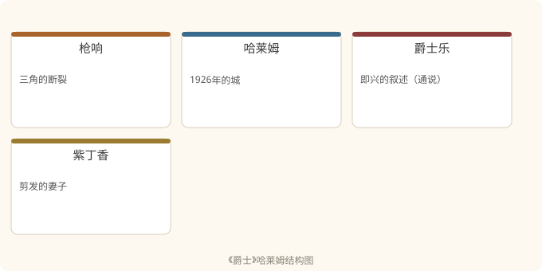

爵士
一、基本信息
| 作者 | 莫里森 |
|---|---|
| 成书/出版 | 1992年（作者页 B150 口径：爵士（1992）） Toni Morrison — Encyclopaedia Britannica（百科全书） |
| 国别/地区 | 美国 |
| 时代 | 现当代 · 20世纪 |
| 体裁 | 长篇小说 |
| 语言 | 英语 |

《爵士》哈莱姆结构图（主题·结构图）
二、创作背景
作者页（B150）：莫里森 major_works 载'爵士（1992）'（B150 作者页定位，详见 chonger 条核对）。
题材（通说待核）：1926年哈莱姆——乔枪杀少女薇奥莱特剪发——'爵士'时代的三角与城市。
三、内容脉络
乔与紫丁香的婚变、少女多卡斯之死（通说待核）。
叙述者即'爵士乐'（通说待核）。
四、主要人物表
| 人物 | 身份 | 说明 |
|---|---|---|
| 乔 | 化妆品推销员 | 枪杀者（通说待核） |
| 紫丁香（Violet） | 妻子 | 剪发者（通说待核） |
| 多卡斯 | 少女 | （通说待核） |
五、主题与艺术特点
- 爵士乐结构：即兴与复调（通说）。
- 哈莱姆的城市记忆（通说待核）。
- 三角暴力（通说待核）。
六、影响与评论
- 作者页：莫里森代表作谱系（B150 作者页口径）。
Toni Morrison — Encyclopaedia Britannica（百科全书） - 作者页：莫里森1993年诺奖（B150 作者级）。
Toni Morrison — Encyclopaedia Britannica（百科全书）
七、阅读建议
难点
- 爵士结构的阅读。
- 哈莱姆史。
- 《爵士》（南海出版公司新经典版？——通说待核）。
- 英文原版。
《宠儿》《所罗门之歌》之后。
八、待核实
- 1992年出版（Knopf说）核对。
- 乔/紫丁香/多卡斯人名核对。
- 叙述者的'爵士'评论待核。
本页主要来源
莫里森的其他收录作品：宠儿